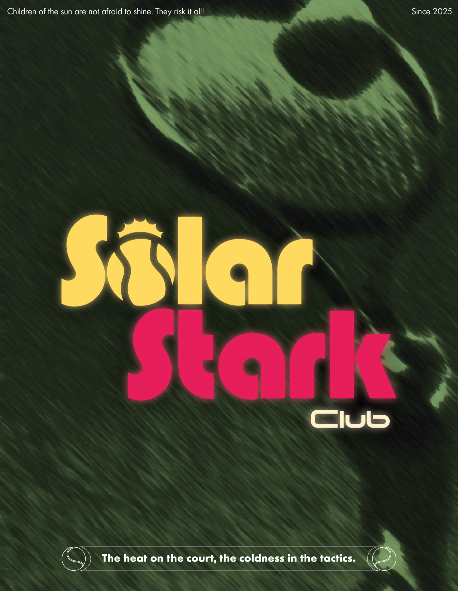
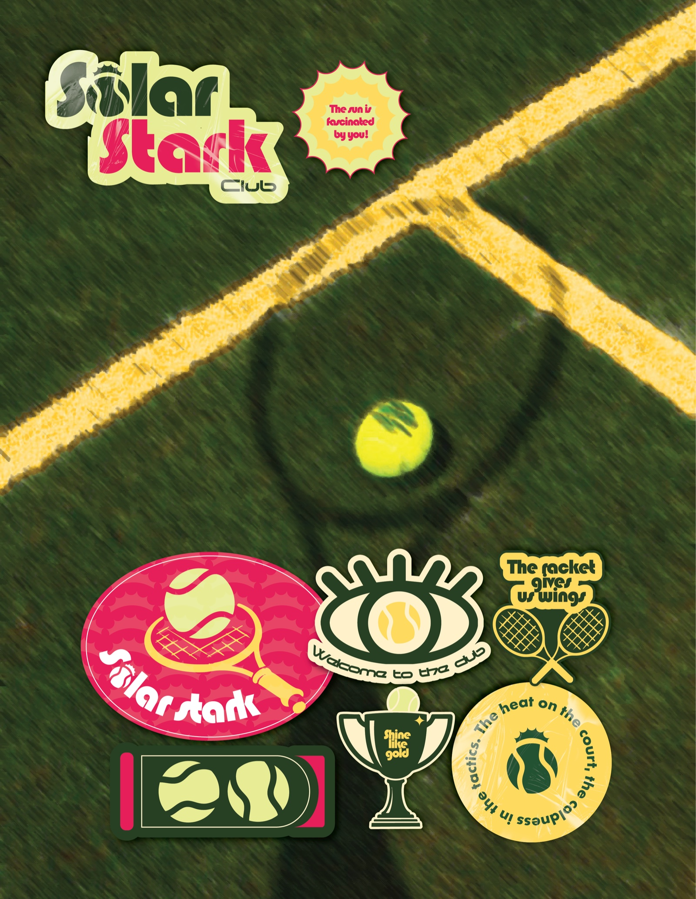
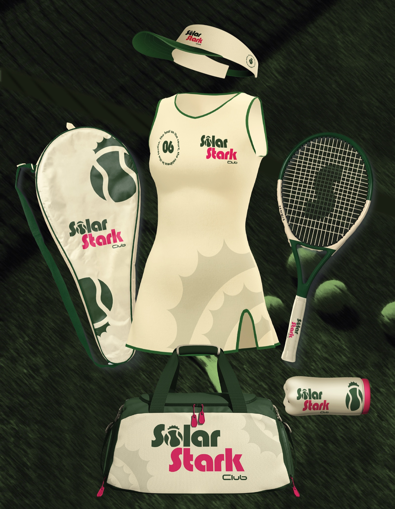
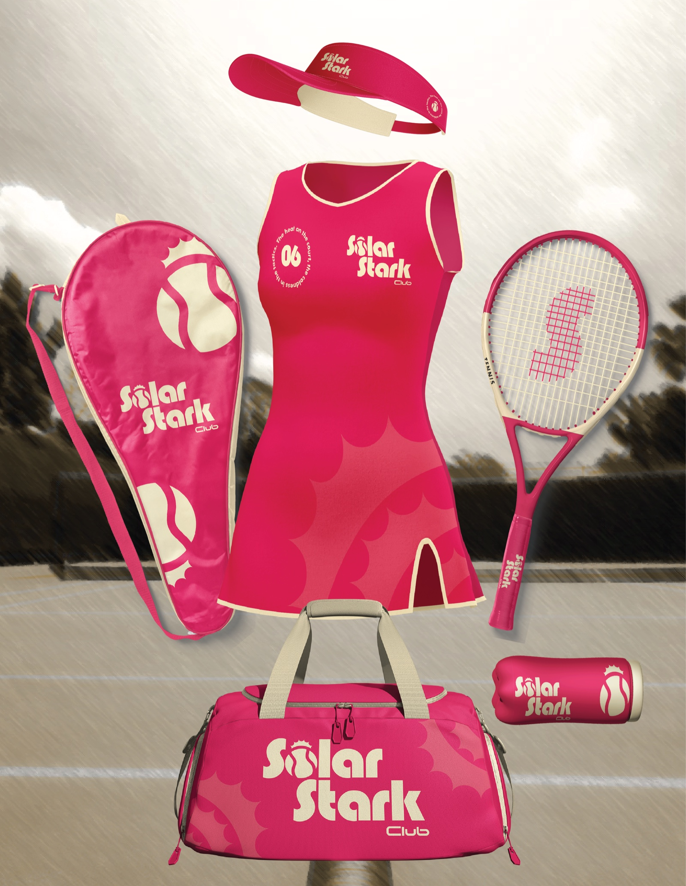
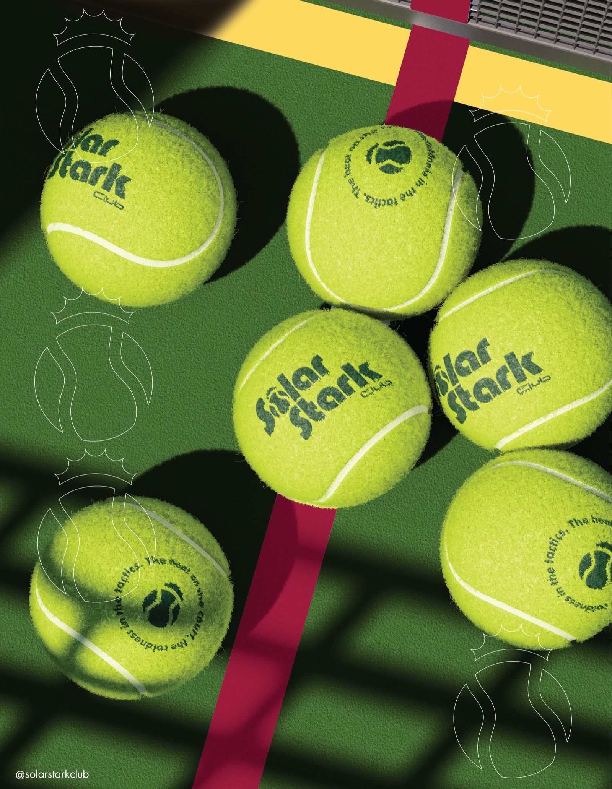
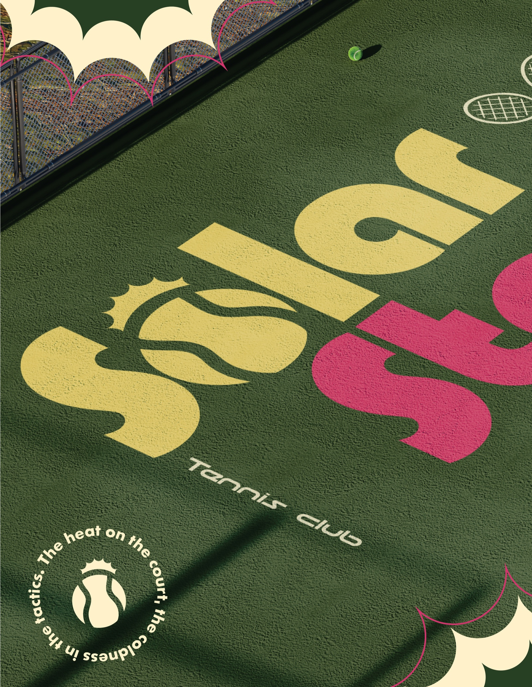
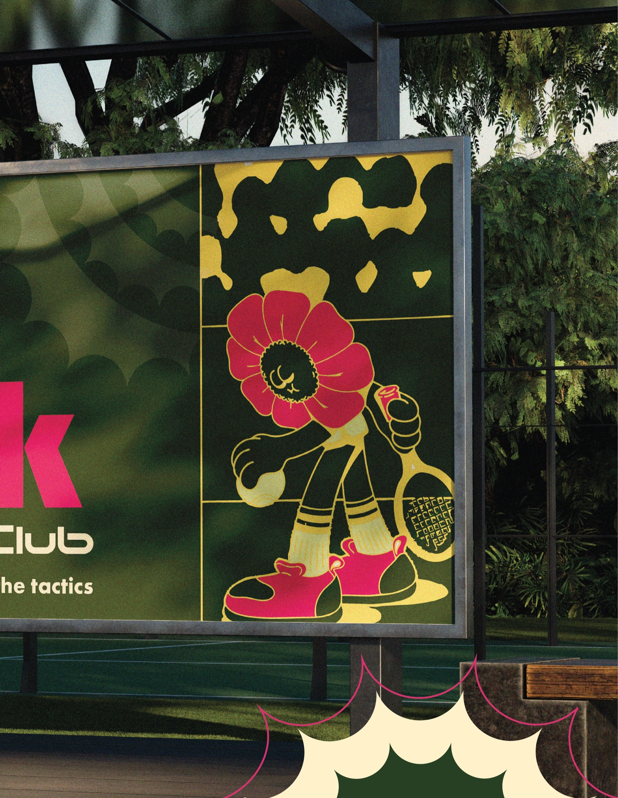
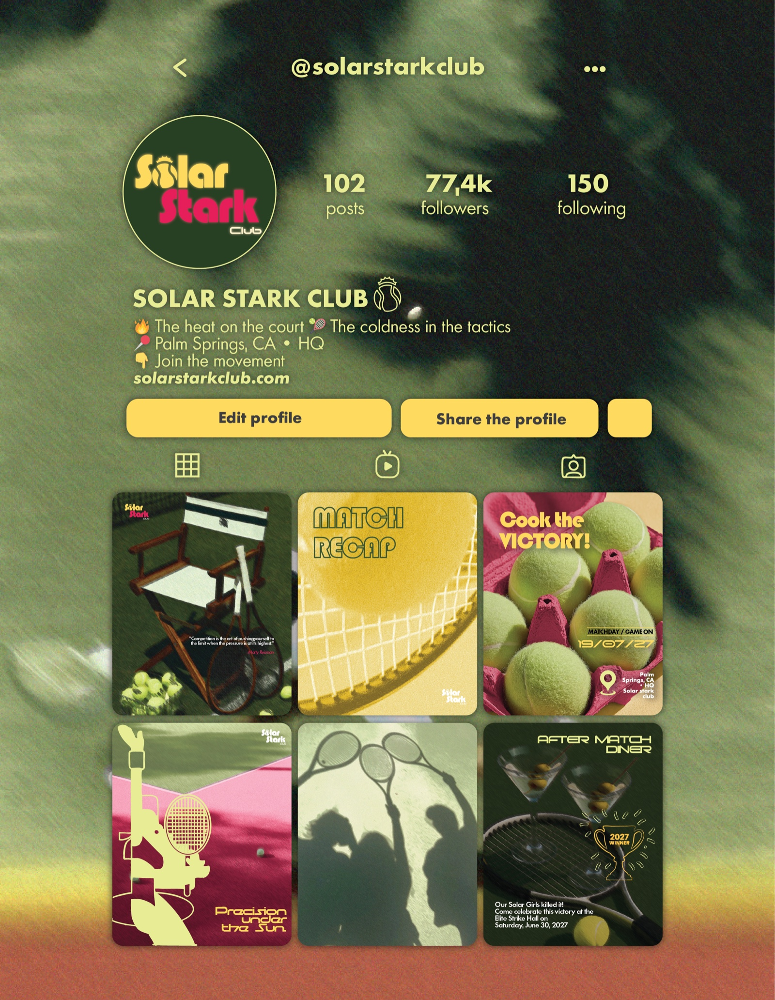
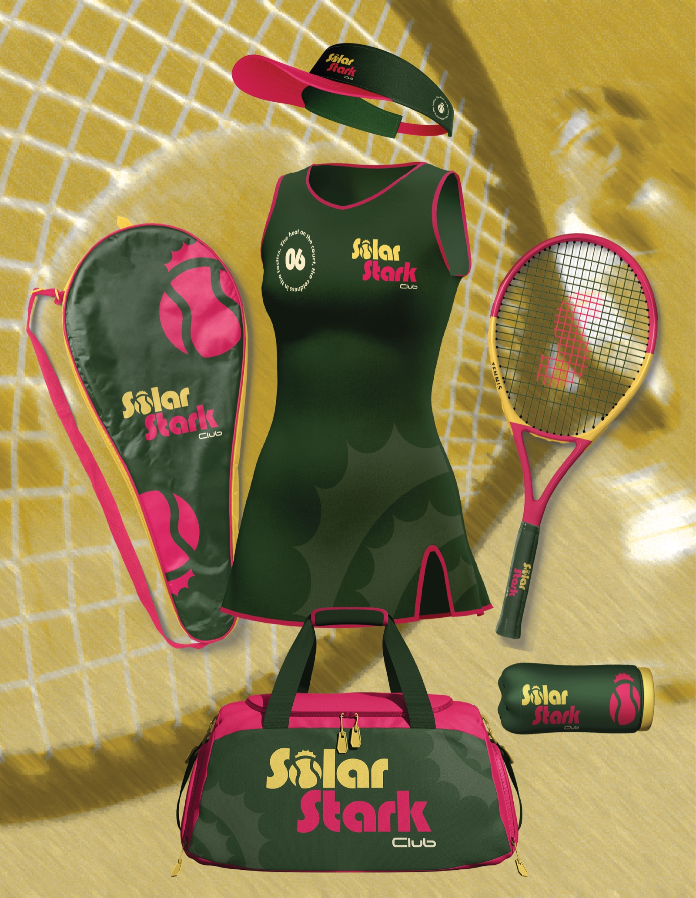
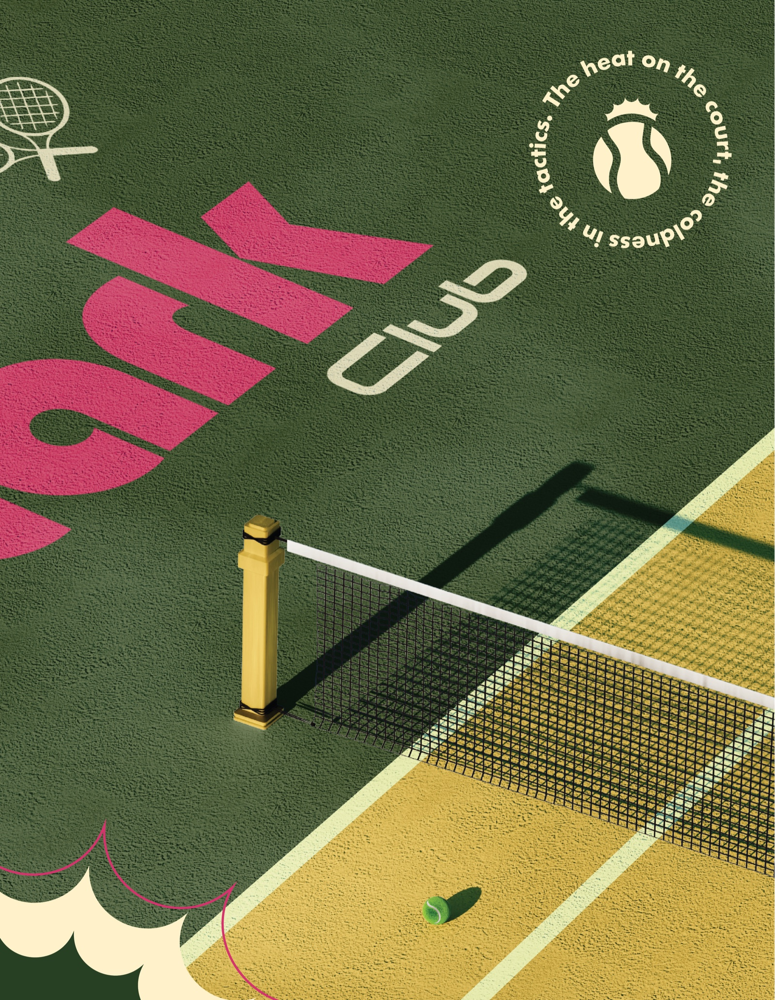

01
Solar Stark Club
« Children of the sun are not afraid to shine. They risk it all! » — Solar Stark Club est une marque de tennis club & sportswear lifestyle haut de gamme (Palm Springs, CA) alliant l'énergie solaire brute, la rigueur tactique et une esthétique rétro-futuriste vibrante (« The heat on the court, the coldness in the tactics »).
Conception intégrale du système de marque : logotype vintage-moderne à couronne solaire, typographies signature, planches de stickers & insignes du club, ligne exclusive de vêtements et merchandising déclinée en 3 colorways (robes de tennis plissées n°06, duffle bags, casquettes visières, raquettes et gourdes), scénographie de court de tennis grand format avec marquage au sol XXL, panneau d'accueil avec mascotte illustrée « Fleur de Soleil », et direction artistique éditoriale pour les réseaux sociaux (@solarstarkclub).
- Contexte
- Direction Artistique & Branding Global / Concept Brand (Since 2025)
- Livrables
- Identité Visuelle, Sportswear, Scénographie, Social Media & Motion
- Outils











